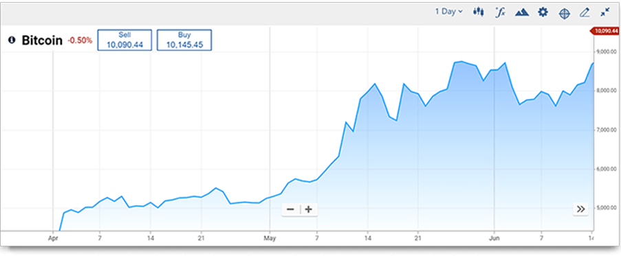

-
主要加密货币术语
如果您已经是交易者，那么您应该知道交易领域存在一套完整的词汇列表、术语和表达式。技术和基本面分析、布林带、
支撑和阻力位、波动交易等……这些只是冰山的一角。几乎每个专业领域都是一样，他们都拥有自己的术语和行话，我们需
要花一些时间来熟悉它们。加密货币也是如此。
因此，如果您已经开始交易或正在考虑从事交易，则有必要让自己快速掌握加密货币领域常用的专业术语和表达语。
为了帮助您快速入门，我们为您准备的初学者指南涵盖了加密领域中可能会遇到的一些关键术语。
区块链技术和相关的加密条款
在详细介绍加密货币的主要类型之前，我们应该首先解释「区块链」这一术语。区块链是一种特殊类型的软体技术，大多
数加密货币都建立在该技术之上。
区块链使用计算机节点的P2P网路来验证加密货币交易和所有权。此验证过程通过加密技术来保证安全。 加密涉及到复杂
的数学公式运用，这就是加密货币名称的来源。
节点是指运行特定软体网路的每一台计算机。一些专业节点的任务是解决加密问题，从而保护加密货币交易。他们因具有
挑战性的工作而被奖励加密货币。因为他们投入了大量精力来挖掘新的加密货币，这些专业节点通常被称为「矿工」。

不同种类的加密货币——硬币和代币
为了了解加密货币，您应先弄清楚的概念之一是为什么有些被称为「硬币（coin）」，而另一些被称为「代币（token）」
有时甚至被称为「实用型代币（utility token）」。
加密货币硬币是一种旨在替代美元、英镑、欧元或日元等传统的「法定」货币，用于买卖各种商品和服务的加密货币。 比
特币（Bitcoin）作为第一个加密货币，是「硬币」加密货币的典型例子，其他硬币包括比特币现金（Bitcoin Cash）和莱特
币（Litecoin ）。
比特币现金的出现是比特币区块链中出现「硬分叉」的结果。为了有机会使用基础「协议（protocol）」或区块链软体，
必须至少 51%的区块链节点同意实施协议更改。 比特币网路的一部分希望进行部分技术更改，他们认为这将使区块链更加
高效。虽然他们没有获得 51％多数节点的同意，但是仍然继续更改了协议。这在区块链中创建了一个硬分叉，意味着分成
了两个独立的硬币。一部分批准了更改，而另一部分拒绝。
从硬分叉开始，接受更改的区块链一方成立了一种新的加密货币，即比特币现金。
每当加密货币的区块链更新时，就会出现一个分叉。 当分叉的一方继续作为一种新的独立加密货币存在时，该分叉则被称
为「硬分叉」。 您经常会遇到的另一个术语是「 替代币（Altcoins）」。替代币是指非比特币的其他任何加密货币，是随
着比特币的推出加密货币概念被普及后开始出现各种不同类型的加密货币时被硬币化的加密货币。
加密货币代币 的设计初衷和传统货币不同。相反，它们与具有特定功能的区块链有关。此功能可能是智能合约区块链，如
乙太坊（Ethereum），乙太坊被用于构建去中心化应用程式「Dapp」，或支付区块链如 Ripple 。代币只被用于支付这些
单一用途的区块链平台。
虽然以上内容无法全面、详尽地解释您将遇到的所有加密货币专业术语，但是它应该已简要涵盖一些关键的术语。
如果您希望进一步了解相关内容，可参考网路上的在线资源。
-
交易量最高的加密货币有哪些？
加密货币市场具有很强的多元性。由于门槛较低，几乎任何理解区块链技术的人士都可以开发自己的加密货币。目前在主
要、中型和专业交易所中上市的加密货币达到1600多种。在这些加密货币和数字代币中，客观来讲，真正的加密货币不超
过两位数。而这一小部分又可以继续缩减为具有充分交易量且实现真正流通的加密货币，或常被用来支付区块链平台使用
费用的实用型代币。该类别大概包括20-30种不同的数字货币。
自加密货币问世以来，最受欢迎的两大加密货币一直是比特币 和以太坊（Ether）。在过去的几年中，瑞波币XRP 一直排
名第三。 2018年9月，瑞波币XRP的市值甚至短暂超过以太坊，成为第二大最受欢迎的加密货币。除了比特币、以太坊和瑞
波币XRP以外，还有其他几种受欢迎的加密货币，但是它们的市值和流行程度时强时弱。我们独家创建的加密货币10大指
数（Crypto 10 Index）由任一指定时间段最受欢迎的加密货币组成的，也可参与交易。
最受交易者欢迎的加密货币包括哪些？
通过快速线上搜索，目前市场上最受欢迎的加密货币包括：
比特币
以太坊
瑞波币XRP
莱特币
NEO
IOTA
比特币
比特币被认为是最早的加密货币，于2009年推出，自此加密货币运动开始。比特币及其基础区块链技术由中本聪个人或其
领导的团体发明。比特币被视为法定货币体系的替代品。中本聪的真实身份仍未知。
中本聪在比特币白皮书中指出，由中央银行和少数金融机构控制的法定货币体系导致财富和权力的集中化，阻碍了社会和
财富的流通。通货膨胀侵蚀了普通民众的储蓄，而这大多是央行印钞的结果。
比特币通过限制发行单位数量解决了这个问题，避免因印钞造成的通货膨胀。比特币的点对点区块链技术意味着它不需要
通过金融机构来处理交易和验证所有权。
到目前为止，比特币仍然是最受欢迎的加密货币，其价格走势对加密市场具有重大影响。
以太坊
以太坊是第二大受欢迎的加密货币，它与比特币之间有着很大的区别。以太坊（Ethereum）实际上是区块链平台的名称，
而以太币（Ether）则是加密货币的名称。以太坊是运行智能合约的区块链平台。
智能合约可被看作是一组预定义的「规则」，用于创建不同的应用程式或Dapps（去中心化应用程式）。由以太坊创建的
Dapps范围广泛，从游戏到首次代币发行ICO（加密货币中的ICO类似于众筹或IPO）。自以太坊之后，尽管也陆续推出了
其他智能合约平台，各个平台都声称其具备更加先进的区块链技术，但是以太坊作为最早的区块链平台仍保持着最高的使
用率。与比特币被用作传统法定货币的替代品相比，以太币（除作为交易资产外）则被用来支付以太坊平台的使用，因此
也被称为「实用型」加密货币。
瑞波币XRP
瑞波币XRP是另一种「实用型」硬币，其区块链平台旨在更加有效地促进法定货币的跨境转移。瑞波币XRP从一开始就与众
多银行开展合作并受到银行的支持，经常被视为「权威」的加密货币。近年来，使用瑞波平台转账服务的数量逐渐增加，
使其可能成为传统金融体系的一部分。
莱特币
莱特币是另一个有潜力替代法定货币的加密货币，是比特币的主要竞争对手。它的创造者希望莱特币最终被用于支付日常
商品和服务。莱特币将自己定位为比比特币更实用、技术上更先进的替代品，其通过P2P网路确认交易的速度要明显快于
比特币。原则上讲，这一优势可能让莱特币对商户更具吸引力，但由于「现实生活」中的加密货币交易仍然受到极大的限
制，比特币更加成熟的「品牌」使其成为首选的法定货币替代品。
NEO
和以太坊一样，NEO是一个智能合约和Dapps平台。 NEO于2014年推出，目标是在以太坊的基础上提供实用性相当，但技
术更先进的区块链技术。许多人认为，NEO平台在技术上优于以太坊，但与莱特币和比特币的情况一样，后者更稳固的市
场地位使其在市场上保持更高的份额。
IOTA
IOTA是一种基于有向无环图（DAG）结构的独特加密货币，专门针对物联网（IoT）设备所设计。物联网可促进连接设备
的微交易，并有助于维护数据的完整性。近来，随着物联网技术的普及，IOTA跃居交易量最大的加密货币行列，其发展前
景广阔。
-
什麼是加密貨幣交易？
加密货币交易是指针对单个加密货币兑美元 （加密货币/美元对）或兑另一种加密货币（加密货币对）选定价格方向，进行
多仓或空仓操作。差价合约（CFD）是一种非常受欢迎的加密货币交易方式，它不仅拥有较高的灵活性、支持杠杆，还可
以进行空头和多头交易。
日益普及的加密货币交易
自比特币在互联网推出以来，加密货币交易在过去的十年中变得越来越
受欢迎。加密货币是基于区块链或P2P技术创建的数字硬币，并利用密
码学原理来确保交易安全。加密货币有别于世界各国政府发行的法定货
币，因为它们是无形的，由数据位元组组成。此外，加密货币不是由中
央主体或机构（例如央行）发行或在经济流通中受其管控。由于加密货
币非政府机构发行，因此也不被视为法定货币。
尽管加密货币无法成为世界经济中的法定货币，但是它们仍具备改变金
融格局的潜力，市场地位难以小视。同时，加密货币的构建基础——区
块链技术也为交易者带来了新的投资机会。

加密货币的种类
尽管目前市场上存在成百上千种加密货币，但是交易者的兴趣似乎只集中在大约6种加密货币上。比特币作为最受欢迎的加
密货币之一，被视为最早的加密货币。由于最初的比特币区块链出现「硬分叉」，比特币又分支出两个新的虚拟硬币：比
特币现金（Bitcoin Cash）和 比特币现金ABC（Bitcoin Cash ABC）。在加密货币交易所和线上CFD交易平台上经常交易的
流行加密货币还包括以太坊、莱特币 和瑞波币XRP。
受欢迎的加密货币可分为几个大类。首先是旨在取代法定货币的加密货币，如比特币、比特币现金（BCH）、比特币现金
ABC（Bitcoin Cash ABC）和莱特币等。另一方面，以太坊仅被用来「支付」以太坊智能合约平台，该平台可用于构建去中
心化应用程式（Dapps）。因此，以太坊被看作是一种「实用型代币」，而非货币。相反，瑞波币XRP则被用作基于区块链
的支付平台。此外，还有可与股票市场或货币指数进行比较的加密货币10大指数（Crypto 10 index），该指数由10种交易
量最大、流动性最高的加密货币资产所组成。
比特币（BTC）
比特币或BTC作为世界上第一个加密货币，于2008年推出。它也是第一个采用区块链技术的货币。如今，比特币已成为行
业中价值最高的加密货币之一，甚至超过黄金。
比特币现金（BCH）
比特币现金是原始比特币区块链上硬分叉的产物，创建于2017年8月。其基本思路是在原始区块链上增加区块大小限制，
从而实现更快速地交易处理。
比特币现金ABC（BAB）
比特币现金ABC是比特币现金区块链中的另一个硬分叉，创建于2018年11月15日。此次硬分叉是对比特币现金区块链软体进
行升级的结果，希望借此引入比特币现金可调区块大小上限（「ABC」命名由此得来）。比特币现金可调区块大小上限在
当时曾是区块链最大的软体客户端。升级的目的则是探索非现金交易（如智能合约和Oracle预测服务等）的可能性。此外，
分叉的另一目的是希望用交易拓扑排序（TTOR）替换规范交易排序（CTOR）。然而，并非比特币现金网路上的所有成员
或节点都同意升级，因此在引入升级时发生了另一次硬分叉，比特币现金ABC因此诞生。
加密货币10大指数（Crypto 10 Index）
在为加密货币资产类别提供交易基准。它由10种交易量最大、流动性最高的加密货币和代币组成，依照多个主要交易所的
平均价格定价。该指数于2016年12月23日以1000点为基点，并自2018年1月9日起按10个成分货币的市场变动进行重新计算。
以太坊（ETH）
以太坊的设计初衷是提供一种快速处理交易的方式，是基于比特币区块链技术开发而来的区块链网路。该加密货币最早由
Vitalik Buterin于2013年11月提出。
瑞波币（XRP）
瑞波币是由美国科技公司Ripple Labs Inc.于2012年开发的一种支付解决方案。该加密货币的主要目的是通过最小化成本和
付款处理时间来简化当前的全球付款转账系统。
莱特币（LTC）
莱特币于2011年10月被引入加密货币市场，目的是促进跨境支付。它旨在提供比比特币更快速的交易验证。
-
为什么选择加密货币差价合约交易？
在过去几年中，交易者对加密货币的兴趣激增。这一交易需求促使许多差价合约交易平台和经纪商陆续开始提供加密货币
交易对。一类交易对包含一种加密货币（如比特币）和一种法定货币（如美元）。交易者通过预测交易对中加密货币对法
定货币的价值是上涨或下跌来实现获利或亏损。
另一类加密货币对由两种不同的加密货币组成，例如，比特币和以太坊。在这种情况下，交易者通过预测交易对中基础加
密货币对其加密货币搭档价值是上涨或下跌获利或亏损。从这一点来说，加密货币差价合约交易的运作方式和外汇差价合
约相同。从更广义上讲，加密货币差价合约交易的运作方式与其他更加传统的资产类别（例如商品、股票或股票市场指数）
差价合约一样，因为交易者都是通过预测所选工具的价格走势进行投机操作。那么，为什么差价合约交易者选择加密货币
而非传统资产作为交易对象？让我们来看看交易者选择加密货币差价合约的一些最常见原因。
加密货币作为全新、「颠覆」性的技术
自最早的加密货币——比特币于2009年推出以来，加密货币市场一直存在。尽管如此，加密货币在近3-4年中才从局限于
技术爱好者的利基市场发展成为一种新的资产类别，并有望在主流金融市场上发挥长期和重要的作用。
加密货币被视为「颠覆者」，意味着它有可能从根本上改变金融市场的运作方式。当颠覆性技术成功地从根本上改变市场
并发展成一种金融资产形式时，随着时间的推移它们通常会成为带来最大价值增长的资产。 10年前，亚马逊的股价约为83
美元。而现在，同样一只股票的价格高达约1,900美元，增长近2200％。对于早期投资者而言，这是一笔丰厚的利润，而这
种增长几乎只有通过颠覆性技术才能实现。一些交易者认为，在未来几年中，「颠覆性」的加密货币新技术将从根本上改
变货币和商品市场，他们希望抓住这一机遇获取丰厚的回报。
加密货币作为商品
有一种观点认为，某些加密货币更像是商品。例如加密货币以太坊，它的设计初衷并不是取代货币，而是支付区块链平台
的使用费用。该区块链平台被用于创建智能合约。商品的价格受全球需求的影响：例如，石油被用于制作燃料、塑料和其
他材料，因此其价格受到全球对石油制品需求的影响。如以太坊一样的「实用型」加密货币的价格则受到与其关联的区块
链平台使用需求的影响。
加密货币的波动性远高于传统资产
加密货币交易者通常在短期持仓中获利或亏损，而不是长期持有5年、10年或20年。他们利用数周、数天、数小时甚至数分
钟内的价格变动进行建仓和平仓操作。 2在传统资产交易中，较短时间周期内的价格波动一般明显低于数月到数年时间。
但是，由于加密货币较高的波动性，在短时间内出现巨大的价格波动并不罕见。
对大多数传统资产而言，一天内出现1％价格波动的情况并不多见。只有在市场发生重大变化严重影响投资者情绪时，才可
能出现剧烈波动。而另一方面，在加密货币市场中，单个加密货币价格每天变化几个百分点是很正常的。当加密货币市场
发生重大变化时，价格波幅可能高达10％或以上。这给交易者带来了更多从短期交易中获取丰厚利润的机会。当然，这也
使得加密货币交易的风险明显高于其他波动性较小的资产。因此交易者必须谨慎交易，避免重大损失。
加密货币的波动性是其作为「新兴资产类别」的另一个标志。随着市场的日益成熟，加密货币的波动程度预计将逐渐下降
到与大多数传统资产类别相当。

在加密货币交易中使用杠杆
在差价合约交易中，杠杆可用于扩大敞口。例如，如果选择的加密货币差价合约杠杆比率为1:2，并且价格变动为5％，则
差价合约交易者实际上将赚取10％的利润（或损失10％，取决于价格走势方向和交易者选择的持仓类型），这意味着差价
合约交易者可以快速赚取或亏损大笔资金。
加密货币差价合约交易的平台安全性
在进行加密货币差价合约交易时，交易者并非实际拥有加密资产，而是通过推测价格走势进行投机交易。这意味着您可以
交易加密货币，而不必担心黑客攻击您的加密货币钱包并盗取钱财。此外，大多数交易平台均受SSL保护，从而确保安全的
交易环境。
加密货币空头交易
加密货币差价合约交易让您不仅仅在上涨市场中获利，价格下跌时同样有投资机会。例如，持加密货币差价合约空仓的交
易者将在加密货币的买入价低于其建仓卖出价时获利，但如果买入价高于建仓卖出价则亏损。
-
您可以通过外汇或CFD平台交易加密货币吗？
您可以在外汇/差价合约平台上交易加密货币吗？简单的回答，是，您可以。但是，您必须考虑到，在外汇和CFD平台上交
易加密货币与在加密交易所中交易基础资产之间存在很大的区别。
如何在外汇/差价合约平台上交易加密货币？
值得注意的是，在大多数外汇/ CFD平台上交易的都是加密货币差价合约。换句话说，交易者与差价合约提供商就基础资产
（例如 比特币）达成协议。这些衍生产品依赖于基础资产的价格变动，但不涉及实际数字加密货币的交换或所有权。
这意味着交易者无需交换任何真实的加密货币，也不必担心钱包或地址，同时减少了黑客攻击的风险。即便最好、最可靠
的加密货币交易所也无法完全避免黑客攻击。这样，差价合约交易者可以专注于利用市场变动获利。在外汇/差价合约平台
上交易时，当您选择做多操作，且加密货币的卖出价高于建仓时的买入价，您将盈利；如果做空，则在加密货币的买入价
低于建仓卖出价时盈利。反之亦然：如果卖出价低于建仓买入价，做多亏损；当买入价高于建仓卖出价时，做空亏损。
在外汇/CFD平台上交易加密货币与交易所交易有何不同？
在外汇/CFD平台上交易加密货币与交易所之间的主要区别在于：
+ 所有交易均不涉及实际数字加密货币的交换。
+ 无需拥有加密货币钱包。
+ 依据与外汇/CFD提供商协定的条款和条件进行加密货币交易。
+ 加密差价合约交易可使用杠杆。
+ 您可以交易加密/法定货币对（例如BTC/USD或LTC/USD对），而大多数加密交易所只能交易加密货币对。
+ 您只能使用法定货币进行存取款。
加密货币的波动性远高于传统资产
加密货币交易者通常在短期持仓中获利或亏损，而不是长期持有5年、10年或20年。他们利用数周、数天、数小时甚至数分
钟内的价格变动进行建仓和平仓操作。 2在传统资产交易中，较短时间周期内的价格波动一般明显低于数月到数年时间。
但是，由于加密货币较高的波动性，在短时间内出现巨大的价格波动并不罕见。
对大多数传统资产而言，一天内出现1％价格波动的情况并不多见。只有在市场发生重大变化严重影响投资者情绪时，才可
能出现剧烈波动。而另一方面，在加密货币市场中，单个加密货币价格每天变化几个百分点是很正常的。当加密货币市场
发生重大变化时，价格波幅可能高达10％或以上。这给交易者带来了更多从短期交易中获取丰厚利润的机会。当然，这也
使得加密货币交易的风险明显高于其他波动性较小的资产。因此交易者必须谨慎交易，避免重大损失。
加密货币的波动性是其作为「新兴资产类别」的另一个标志。随着市场的日益成熟，加密货币的波动程度预计将逐渐下降
到与大多数传统资产类别相当。